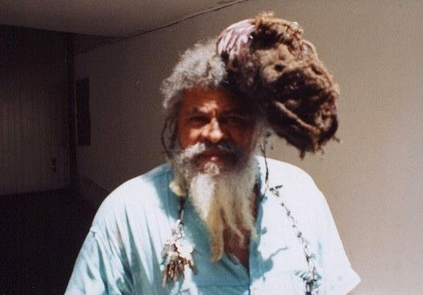
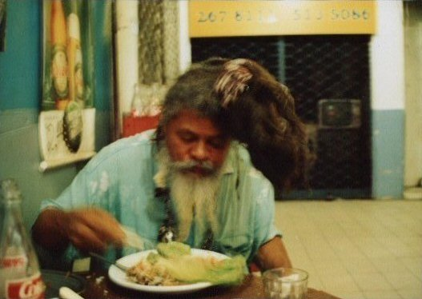

Home
:: Bio
:: Biography of Daminhão Experiença
Biography
Understanding Damião Experiença
This biography is based in the book of Damião, found in this web site, and also in personal made
interviews with him, however without existing registers; Damião does not let himself be recorded or filmed so far.
Born in the state of Bahia, the city of Portão, close to Salvador. Damião at 13 years old runs away from his house to
escape the brutality of his parents who beat him with handle liana, and as clandestine he travels in a ship to
Rio De Janeiro. Arriving, he starts to live in the night with the prostitutes, discovering the world early; as
he starves, he decides to join the Brazilian navy to be able to eat. Exchanges of job n times, learns to be a man
in the streets. He frequents brothels, decides to live with a prostitute in a palafita house, being expelled from the
navy therefore. He repents, after 15 days he comes back toward the quarter and gets 1 year of jail, 1 month of lone
confinement. He leaves transformed; there he knew the Lamma Planet (Lamma in Portuguese also means mud.)
Damião entered Ferreira Da Cruz, left Damião Experyença.
He starts to paint, paints a picture called Planeta Lamma, starts to learn music in the jail
with the friends, we are in the 60s, pre-dictatorship, and the hippie age is in its fullness. Damião is in middle.
When he leaves the jail he turns into a radar operator, and after one year due to an accident
(or who knows for convenience maybe ?) the navy retires him. Damião is back to the streets, returns to the profession
that followed him since early day - PIMP. He uses the money profit from the prostitutes to record his albums, starting with
the first one in 1974, called Planeta Lamma, recorded solo, a guitar with only 1 string, 1 rattle hung in the
guitar to make percussion and an harmonica attached to the neck. Magnificent record, recorded all in the dialect of the
Planeta Lamma, language that the people of the infinite taught him, this record is available entire in the
site for download and has 13 tracks with high level of creativity. The dialect of Planet Lamma exists, it's real and
Daminhão talks to you whenever you want to, in the dialect. He can sing all the songs of all the records which were
made in the dialect exactly the same way, he can talk using this dialect, he translates entire phrases to the dialect.
He repeats everything again and again, the same way.
From the first one to the record of number 34, there goes 30 years of writings, and history
goes on. The second record comes, two strings in the guitar, third record with three strings, the fourth with four and
fifth, obviously, with five. When six strings were reached he initiated what we call the second phase.
You can check the first phase going to Discography page and hearing what is labeled under - Phase 1.
Then, Daminhão retires the rattle and inserts one bongo and one marimba initiating what we
call second phase, music here is more mature, has a balance between the dialect of the Lamma Planet and the conventional
Portuguese (with slices of Spanish). A synchronized percussion exists, the harmonica solos, rhythm and marimba, turns,
taking the universe in its sound. You can check out the second phase in the Discography page.
Third phase initiates, where Daminhão mixes his writings, his acoustics previous
recordings with the sound of a rock band creating the systematic chaos. It is the more tormented part of his work,
sometimes having five overlapped songs, all sung in the dialect, with unfhatomable bases, many surprising lyrics also.
The matrices of records are overlapped and generate new music. Releases in this phase his self biography, available
in the site, in the Book section. That is his first and only book. Third fase is available at Discography for download.
Damião initiates the fourth phase recording with a band, and launches amazing records
through his label, Lamma Planet that has a band; the band Lamma Planet, according to him formed by today famous
musicians of TV and media, whose names he does not disclose. The lyrics are created in the spot, and sounds like
1970's rock songs, with some songs as exceptions, working in the previous formula.
Here starts the fifth phase, where Damião writes the lyrics first, and sings on rock heavy
bases (as he says it) already in the 80s, more inside the tempo, with start and end, and continues in this format
until stopping in 1992 with the last record - Command Lamma Planet.
After 30 years of career, tired of the public debauch, the lack of support and the media in
general ignoring his work, poor as all we are after catastrophic economic plans, he retires, forgets his records and
loses the matrices of the LPs in flooding that occurs in the bathroom of his house. He is half inmate,
receives few visits, sells all of his remaining records, when not, just distributes them. Sporadically writes
something or records something acoustic in his guitar, thinking about one day to release a piece of his work
in the CD format.
Ironically, when Daminhão believes that the world had forgotten his work,
we at Portão do Daminhão initiates our activities in 2001, rescuing records of the Daminhão, divulging the artist and
trying to place him in return with messages for the people of the planet Earth (calling planet earth…) and arriving
now in 2004 trying to release the work of the Daminhão and creating a Portal for all of his fans and who
believes in a different way to make and to hear music.
Hamalai - MESA !!!.
FAQ
The present questions are FAQs, and verified along with Damião. The texts in italic are phrases of the master himself,
Daminhão.
Sim, mora num apartamento no RJ
e hoje (02/01/04) com 69 anos.
Current photos:


- Is Damião a beggar ?
Not, but frequent people confuse him for the skill deloused of his dressing.
- How did Damião afford recording his LPS ?
With Pimpering money.
- So, you are saying he was a pimp ?
According to him, he is a pimp nowadays.
- Does the navy pay's him a wage?
Yes, he receives a wage for having been retired by the navy.
- How did have Damião left the navy?
Please read the self biography in the section Book.
- Does Damião like women to beat him?
Yes. I am masochistic (still today).
- Does Damião like lesbian women ?
Yes, if you marry a lesbian woman, you arrive home and find only women, a lot,
but if you marry regular women, you arrive home and find a man.
- Did the censorship boycott Damião records ?
Daminhão said that the cuts in the songs, in the tracks in his LPs had been for the censorship to approve,
in others he said that the censorship did not leave him to appear in the TV, in the 70s.
- How many LPs have Damião recorded ?
34, of which the Discography has listed 28.
- Does he give interviews ?
No, Damião believes that the TV and part of the press would treat him as an aberration, not as an artist and
they would not have respect nor for the person, neither for his work. Some periodicals, TV shows and famous talk-shows
already had tried and they had not obtained success. He doesn’t want to be treated as a jerk, or a freak.
- Does Damião make shows ?
Few and rare. The last one was in 2002. They are acoustic because Daminhão is without band currently.
- How many years since the last recording ?
The last record was in 92, therefore 12 years without recording.
- Is it truth that he has participated in records of other artists ?
Yes, but he does not like to comment the subject, does not speak of this, gives to understand that they had
used his name to promote themselves and they had not helped him. Still, there is a resistance on the Daminhão side,
(his way of being) in signing papers of any nature. - My work belongs to the world.
- Is Damião still a communist ?
No longer, he followed the ascension of the dictatorships on the proletariat and ascension of the social democracy in
the world.
- Does he take this seriously ?
Damião takes his work very seriously, knows atomically what he recorded in each track, how it was
recorded and the lyrics, everything is intentional, even what seems to be fortuitous. You should take this seriously too,
this is art.
- What is the dialect of the Lamma Planet ?
It is a language taught him by the people of the infinite of 1999, but you can believe that Damiao has created it,
because the language has nexus, he talks in this language and sings any song that he has made in the dialect exactly
like it was recorded in the LPs. He translates any phrase for - the dialect -, as he likes to call, and repeats later
if asked.
- How many book did Damião write ?
One book, attached inside several different LPs.
- How may record copies used to be made ?
From a thousand to 2.500 copies each title, half distributed, half donated, a small amount sold.
- Damião and virginity.
If you don’t marry a virgin woman, you are a cuckold, someone already fucked your woman.
- What are the Animals of the Black Face cited in his lyrics ?
Police, authorities.
- What Damião believes in nowadays ?
In love, always perpetual, love supreme, without it you do not live.
- Does Damião knows the Internet? How about the site ?
Both, we have shown them for him, He was knocked out and happy, understood the functioning of the sites,
hyperlinks and infra structure of communication. In fast way, he perceived everything the net made for his
work, bringing world-wide recognition.
- Is the music of Daminhao free?
It is free, left open for the world to know his work, to download and to use as you want.
- Is Daimeão a homeless ?
No, he has his own apartment.
- Where can I find Daminhão Experyença ?
At Rio De Janeiro - Brazil in the General Osório square in Ipanema, and in the neighborhoods. He walks there all day,
just ask the local traders about him.
- Does Brazil recognize the work of Damião Experiência?
Not, he is taken as crazy and second category musician (as many others are). Space for his shows does not exist and
he never had his music propagated in the radio.
- What is and where is the Lamma Planet?
Lamma Planet is 27 woods underneath of the mud. There's no someone, there's not other one,
we are all from the Lamma Planet. You can be a baron, you can be a thief .
Also it is the name of the label, the former-band, the book, a picture and a record of the Daimeão Experyença
- What was the label Planeta Lamma ?
It was the label that Damião had and created to release all of his 34 records in an independent way.
- Where else is Daminhão known?
In some countries like Japan, Piracicaba, U.S.A., Holand, Finland, Russia, Brazil and São Paulo, so far.
If you are from another locality, leave a message in the guestbook, please.
- Which are the current plans of the Daminhão?
None. Damião is opened for new proposals.
- Is it possible to interview Daminhão? To make a video set, or documentary ?
For your account and risk. Daminhão hates journalists of any species. Fans have different treatment, as long as
they have the developed mind.
- What is the developed mind?
Knowledge of the damionic work, international politics, and the reality of the schemes of the
musical-machine world-wide.
- What are the numbers 4C and 1308 or 308 appearing in several LPs ?
It is his address and the number of his apartment. He has changed for 308 later when the number 1 fell of the door.
- What do the numbers 1969, 1999 and 69 have in common?
1969 is the good old 69, sexual position, also in certain songs have connotation of the sexual relation itself -
which man, which woman does not like to make a 1969 ? As for the number 1999, it fills all of his work
and doesn't have an explanation (at least a rational one).
- Is Damiao Experyenca influenced by Jimmy Hendrix Experience?
In the beginning he was, later changed because he, Damião, were more complex, in his words:
Everything is experyença, and not experience, because experience everybody can make, but the experyença - being
different and not being experience - it is in each thing that you do, only the experyença, because with the time
it does not cease... (English here is not wrong. It is the way Damião spoke...).
- Who is Isabelita Peron?
She seems to be a fictitious Spanish dancer and Eva Peron at the same time fused in one person.
- Who are the people Damião sings about in his songs ?
João Cândido, leader sailor of the Revolt of the Chibata that surrounded Rio de Janeiro with ships and
threatened bombing, demanding reforms in the navy. Fildel Castro, Cuban dictator, Getulio Vargas, Brazilian dictator,
Isabelita Peron, above described.
- Does Damião understand music?
Yes, he knows everything from jazz to grind core, likes heavy music too much and has baroque influences, as you can check at
Damiao Experiença no Planeta Barroco, in the Discography.
- Who were the musicians that had recorded with Damião and who was the technician?
Damião does not disclose the names of who had been an integrant of the Lamma Planet band, he only says that today they
are all musicians of success, idem for the technician. If you have played, participated, remixed, pressed, or had some
involvement with the work of the Master, please drop us an email to reconstitute a fraction of history,
Damião does not give greater details.
planetalamma@damiaoexperienca.net
- Will we have a re-release of the work of the Damião ?
It depends, all the original tapes, the master ones and DAT were lost in a flooding in his house, but we are
submitting him proposals for release/new edition of his work, direct from vinyl records, WAV files even.
For bigger details, write us to submit to the master your proposal
planetalamma@damiaoexperienca.net
- What kind of sound does Damião listen to ?
Everything, from electronics to commercial music, grind, etc.
- Is Damião nazi ?
Yes, but he said he is Jewish at the same time, as well as affirms that he is monkey and armadillo, from the Earth and
from Planeta Lamma.
- Did Damião support the dictatorship ?
Yes, and he was against the movement Diretas Já (for direct presidential elections). According to him the dictatorship
used to guarantee the order, today Brazil is a slaughter field, where everyone with money, order the killing of whoever
they want killed, and people kill with the bible in their hand..
- Does Damião believe God, does he have a religion?
Damião believes in God, but he does not believe the religions, although he finds important that people have a faith.
- Is the sound of Damião sensible or organic ?
Go buy a record of Caetano and don't bother us.
- Why don’t you record with Damião?
Because we are poor and we do not have money for studio and press, we live in São Paulo city, a bit far from Rio,
locomotion is hard, Damião does not write letters and doesn’t have telephone, and the only way to stay in touch is to
go to his house. We accept donations and invitations to perform in parties, marriages and baptisms, bar mitzvahs and
ceremonies, more on the authors, see www.supersimetria.net,
influenced by the work of the master Daiminhão Experyençã.
- What are Daminhão influences ?
Everything, of sleeping chants, passing to forró, gradual rock, punk, metal, jazz, blues, tango, boleros, folklore.
- Does Daminhão have children, or is he married?
No one registered in my name - I never married.
- Why do some tracks seams to be so equal to other tracks ?
Because they are equal. Damião uses the same music with another lyrics, the same lyrics with another song,
ties together two or three songs and makes a new sound; in essence composed of all these previous songs that had been joined.
He uses the same track with different names in another record, and from there on it becames a new song.
- How many and which are the phases of the Damião?
Please, read the start of the page, the top is up there.
- How can I hear the master?
Go to Downloads.
- Which are the released records?
Go to Discography.
- How can I know more on the Damião?
You can see the biography included in this site, click here.
- I can’t read the self biography or I do not understand the biography, or my translator does not translate the book
correctly. What can I do ?
Learn Portuguese, it's easy and fun. You will love 10 verbal tenses and 60 verbal flexions.
- Why is the site called Portão and not Portal ?
Because Daminhão was born in the city of Portão in the state of Bahia in the country named Brazil, and that is one
linguistic joke, in Portuguese only.
- Do all these bands listed in the site have influences of Daminhão?
Yes, if not heard in the lyrics or the sound, it's in the attitude of the musicians.
- Was the Rastafarian hair of Damião influenced by Bob Marley?
No. Daminhão made his Rasta before Marley, by his own inspiration, much before reggae, in the 60s. He laments for
having done one Rasta in Brazil, where he was not taken seriously.
- Is Damião a Rastafarian, or has he any link with the religion / movement Rasta?
No, he is not, and he does not have any link. He is Rastafarian of the Country (sort of hillbilly Rastafarian)
- Did Damião ever go back to Portão, his homeland ?
No and he will never go. The world raised him and it is his house. He does not know the way his family took and
he never looked for them.
- Which one of his records and songs does he like the most ?
All of them, he does not have any favorites.
- Why do the numbers, the amount of records seem so strange ? 28, 34, 13?
There is not one model to use in order to count the number of the records. Sometimes each side of the LP is a record,
like Planet Hen and Bocagi, in the case of Planeta Lamma both sides are one record. The counting is more or less for
the number of sides with different names, what it seems to be the model that the Damião uses. When we asked,
he didn’t understand, either.
- Why is there an obsession on Damião side with sugar cane, Caiana cane, Cuban cane, to plant sugar cane, to suck
sugar cane, etc ?
In Brazil of the 60s and 70s communists believed that a test of real filiations to the socialism/communism of the time
was to go to work as cutter of sugar cane in the plantations of Cuba, to show that all were equal and that even
doctors cut sugar cane (sic!!!), besides the fact that Cuba had a school of guerrillas where the people of
Latin America trained and learned interesting topics as: - Mounting your own guerrilla, - How to knock down governments,
- Setting coup d etat, How to oppress the proletarians, and so on. Damião probably drank of this belief.
In conversations with him he told us he had lived in Cuba and in Trinidad Tobago.
- Does Damião have similars?
Like him ? Only himself. Some comparisons do exist, of some elements, for example, by the set of his work the comparison
is made with Sun Ra,
for the psycodelism rock and the quantity of LPs to Frank Zappa,
for the politic posture and the way of expressing various cultures to
Fela Kutti, for the creativity to
Coltrane, for the noise to
Albert Ayler, etc. There's an american
called Jandek who has a lot in common with
Damião despite the distance of the countries, songs with short names and lonely minimalist guitar, very personal covers,
improvised lyrics, great number of records and distance of the press, sees link for his site in the Followers section.
- I have a record which is the same of a frend of mine, however with different cover ! How is it possible ?
The only two records that have their own cover are the first and the second, which contains the name of the tracks in the back.
The others do not have a defined cover, Damião printed a lot of covers and used to pick the first in front of him
(including here some covers from the first and the second albums remaining), and put the vinyl inside, so you never know
which one is it.
- My record says in the label one track only, but in the vinyl they are 5. Is it a mistake?
No, it is not. Damião sometimes unites four or five songs under the same title. Sometimes he gives the same name to
different songs. Other times you will only have a track but in the cover 8 names are shown.
- Daminhão never recorded for a big label, a major ?
He was been invited some times, but along with each invitation always came a restrictive papal brief of behavior,
appearance, lyrics, sounds, way of being and Daminhão always found of good tone to say - NO -. He is contrary to sign
in contracts, as he says - I am a loose animal.
- What does it meas this symbol found in the cover of some records and drawings ?
It is my ship that takes me to the Lamma Planet
- Who is the author of all the songs ?
All songs, lyrics, arrangements, regency, orchestration, covers are authorship of Damião Ferreira Da Cruz,
which is Daminhão Experyença.
- What do you gain with this ?
Friends, knowledge and recognition to Daminhão, around the world. Experyença, and we can say that it has been more
valid day by day, it doesn’t cease.
- Do you have plans for the future? Or for the future of the site?
Yes, indeed.
1 - A band like Lounge Lizards, here in São Paulo (ma vlatva) (looking for musicians, if you are interested yourself
drop us an email),
2 - To release some of the LPS of Damião in Brazil and in the world
3 - To make some shows with him.
4 - To record a new work with Damiao, all money reverted for him,
5 - To record a new LP with Damião, as one of his musicians (which means not to get credit for what you play hahahahaha)
6 - Release in this year (2004) a tribute to Damião with the bands of this site, influenced by the work of the master.
7 - Sets of documentaries and videos would be of good tone also and are in the agenda.
If you have interest in some of these topics, talk to us
(planetalamma@damiaoexperienca.net)
- I guess you are pirates and are earning money on the image of Damião.
Say it man, are you punk or not? Were you a punk? Took a course of punking by mail? Communist? Anarchist?
Please Don’t bother us, click here
- This sound is a piece of shit, this site is shit and Daminhão is false and he does not understand music.
Well, either you are a warrior of metal, which we understand, (you have a battle to win in Satan’s name,
clique aqui)
or have been suffering of the Dendê Fever since the 60s (you are not cured yet !!!). Go purchase a record of our
Minister of the Culture and please don’t bother us.
- This music is out of tempo, scale and metric and out of tone and bla bla bla...
You must be a warrior of the traditional jazz or classic music or hard rock. How did you get so hidebound ? Have some fun,
life is cool man. Theory?
Click here and please don’t bother us.
- I want to help, my question is not here.
Drop us a line planetalamma@damiaoexperienca.net,
insert a button in your site (look for the Damião Inside stamp in the Downloads section), and tell your friends
about it !
- Is Damião real ?
Please don't bother us.
PROPAGATE - Go and preach - IMPRIMATUR.
Topo
Acessos ao site desde
25 de agosto de 2002: